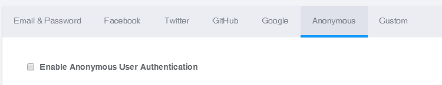
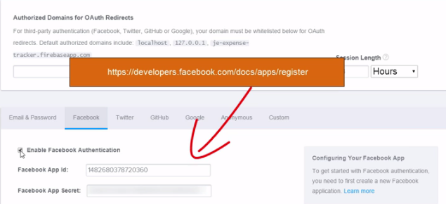

The following courses are from Pluralsight
The following are some of the features of Firebase when it comes to Security
NOTE: Remember, Angular Fire does not do all the things that Firebase can do.
Angular Fire requires the following different services:
NOTE: for a Server, we can use the Node's http-server. Also, the following dependencies are required
npm install http-server -g
npm install firebase --save-dev
npm install angular --save-dev
npm install angularfire --save-dev
npm install angular-route --save-dev
script type="text/javascript" src="js/jquery-1.11.2.min.js"
script type="text/javascript" src="js/bootstrap.min.js"
script type="text/javascript" src="js/firebase.js"
script type="text/javascript" src="js/angular.min.js"
script type="text/javascript" src="js/angularfire.min.js"
script type="text/javascript" src="js/angular-route.min.js"
script type="text/javascript" src="js/app.js"
Angular services (constants + service ) provide a nice way to define a Firebase instance
Create a new script - fbUrl.js
// Creating an Angular service - constant to house the Firebase url
// Super awesome thing we can do with Angular service - Anything with a new to it, can be invoked with service :D
(function(){
angular.module('myApp').constant('FirebaseUrl','https://shwethapramodwedding.firebaseio.com/');
angular.module('myApp').service('rootRef',['FirebaseUrl',Firebase]);
// NOTE: this is same as var rootRef = new Firebase('https://shwethapramodwedding.firebaseio.com/'); :D
}());//IIFE
A component is a simpler hybrid version of a directive/ngRouter. It can be used to simply contain a template with a controller
the following shows a simple deconstructed usage of a component by the name - home
(function(){
var myApp = angular.module('myApp',[]);
myApp.controller('mainController',['$scope','rootRef',mainController]);
function mainController($scope, rootRef){
var vm = $scope;
vm.helloWorld = "Hello World";
}//end:controller - mainController
// One more way is to create a new Component directive of Angular 1.5.x
// This will be invoked as <home></home> in your html
myApp.component('home',{
templateUrl:'/home/home.html',
controller: mainController
});//end:component
}());//IIFE
In this module, We will be implementing the following:
There are four ways of Authentication with Firebase
Anonymous

OAuth - Facebook, Twitter, Google
https://developers.facebook.com/docs/apps/register
